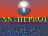

Protein Analysis
Software Tools

ANTHEPROT
ANTHEPROT (ANalyse THE PROTeins) is the result of biocomputing activity at the Institute of Biology and Chemistry of Proteins (Lyon, France).
STORM
STORM - this program extracts protein sequences after ORF prediction and subsequently performs an automatic analysis for each of the proteins. This analysis consists of web-based similarity searches (BLASTp and FASTA) as well as Pfam predictions and Protparam calculations of protein physicochemical properties. The raw output for these analyses is then analysed and summarized.
(Reference: Lavigne, R. et al. (2003.) Applied Bioinformatics 2: 177-179).
Updated: October, 2025